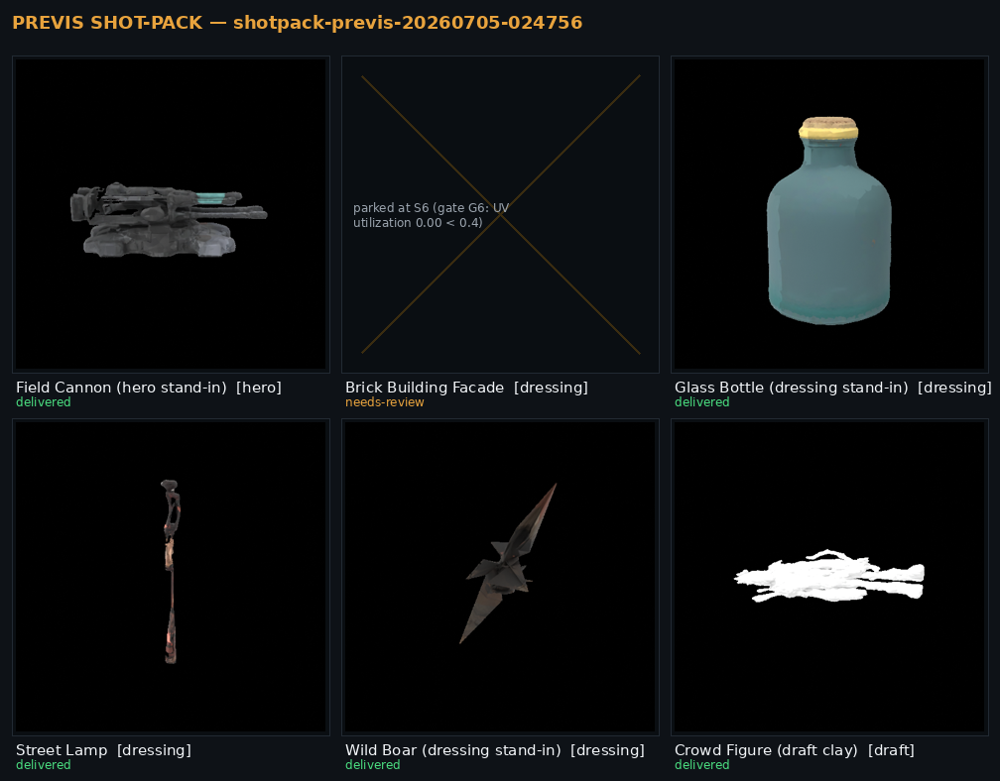
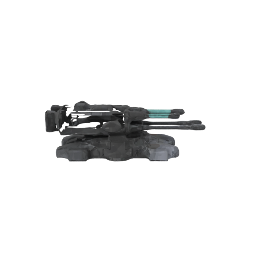
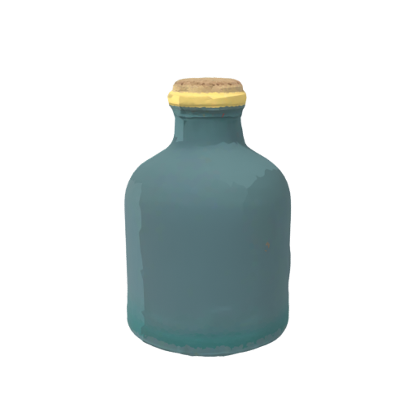
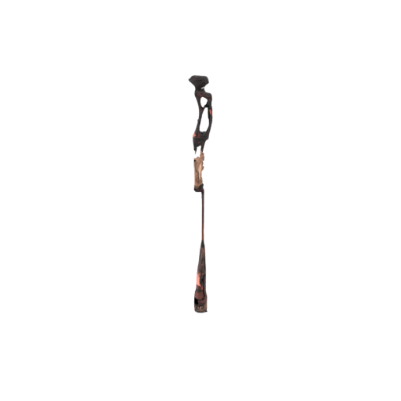
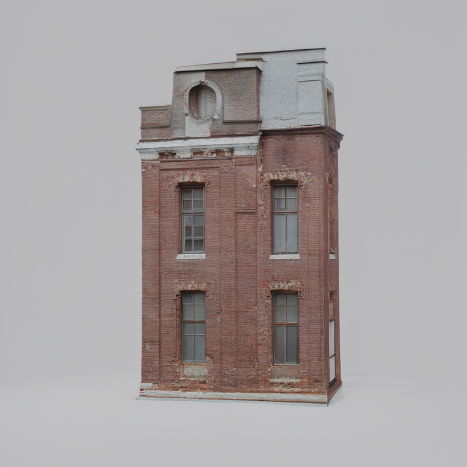

Case study · Film previs 3D
One shot list → an Unreal-ready previs pack in 15 minutes
A mixed shot list goes in — some reference photos, some one-line text briefs. An Unreal-ready pre-visualization pack comes out: a prop per line, FBX and GLB each, one batch import script, Nanite on the heroes. Fifteen minutes, not three days.
The problem
To block a sequence a director needs the set standing in the engine — the hero the camera lingers on, the mid-ground it dresses past, the crowd it never focuses on. Dozens of props, and their only jobs are to import clean and read at a glance. They are throwaway by design; they will be replaced before the shot is final.
The usual options are both bad. Asset libraries never have your props — the specific field cannon, the specific brick facade, the crowd that fits this world — so you end up kitbashing approximations. Outsourcing each prop is per-asset and takes days, which is absurd for geometry you're going to throw away. And a raw text‑to‑3D tool hands you a mesh with no guarantee it will even open in Unreal — a broken UV, a non-manifold shell, an invalid glTF that the importer silently mangles.
For a blocking asset, the render isn't the deliverable. It importing clean, every time, on the first try — that's the deliverable. A pack you have to hand-repair before you can block is worse than no pack.
The run: one shot list → a set you can block in
Here is a real run end-to-end — a six-prop shot list, deliberately mixed the way a real one is: four reference photos and two one-line text briefs, spread across three quality tiers. Nothing was hand-modelled; every number below is from this run.

1 — The shot list
Six lines. Each line names a prop, its source (a photo or a one-line brief), how many copies the set needs, and the tier — how much camera time it earns.
| Prop | Source | Copies | Tier |
|---|---|---|---|
| Field cannon | reference photo | 1 | hero |
| Brick building facade | text brief | 1 | dressing |
| Glass bottle | reference photo | 12 | dressing |
| Street lamp | text brief | 8 | dressing |
| Wild boar | reference photo | 4 | dressing |
| Crowd figure | reference photo | 40 | draft |
2 — The delivered props
Each line drives a generation model, then an automated mesh chain sized to its tier: retopology to the tier's face budget, UV, a texture pass, and export to both FBX and GLB. Below are renders of the actual delivered assets — color-true, under a neutral view transform (not the grey-clay preview an early pipeline would show).



3 — The measured numbers
This is the whole point — the wall-clock cost, per prop, from this run. Time follows the tier: a crowd body in seconds, dressing props in a couple of minutes, the hero in six. The pack total is what a director actually waits.
| Prop | Tier | Wall | Result |
|---|---|---|---|
| Crowd figure | draft | 15 s | ✓ delivered |
| Street lamp | dressing | 1m58s | ✓ delivered |
| Wild boar | dressing | 2m09s | ✓ delivered |
| Glass bottle | dressing | 2m41s | ✓ delivered |
| Field cannon | hero | 5m53s | ✓ delivered |
| Brick facade | dressing | 1m37s | refused — see below |
| Whole pack | 15m12s | 5 of 6 delivered |
15m12s is a warm run — the stack already resident. From a cold start the same pack lands in roughly 22 minutes; the extra time is the model weights loading once, not per-prop. Either way it's a shot list in under half an hour.
4 — The Unreal import
The pack ships with one script. You run it in Unreal's Python console and the whole set imports under /Game/Previs/<pack>/ in one pass — the right file per prop, materials attached, and Nanite switched on only for the heroes (previs wants dense heroes and light dressing the DP can instance freely). It reads the pack's own manifest, so it skips anything that was refused and never half-imports a broken prop:
for asset in PACK["assets"]:
if asset.get("status") != "delivered":
print("skip (not delivered):", asset["prop_id"])
continue # refused props are never imported
...
opts.static_mesh_import_data.build_nanite = bool(asset.get("nanite"))
tools.import_asset_tasks([task]) # Nanite auto-on for heroes onlyIt's idempotent — re-export the pack, re-run, and it replaces in place. No per-prop clicking, no picking through a folder deciding which files are safe to import.
What you do with it
The pack isn't the product — the afternoon is. Here are the five delivered props dropped into one set and shot with a director's dolly-in, straight in the engine-agnostic viewport. No modelling, no sourcing, no waiting on a vendor: a shot list at breakfast, a blockable set to point a camera at by lunch.
The honest differentiator: the gate refuses the broken import
Anyone can show you the props that worked. The reason this pack is worth paying for is the prop it stopped — and the calibration decision that let the other five through fast without letting a broken one slip.
Exhibit A — refused to ship
The brick facade the gates refused

The brick facade came from a one-line text brief, and the front-end concept looked perfect — the image on the left is what the pipeline generated before it touched geometry. Then the 3D reconstruction collapsed: the UV layout came out degenerate, texture utilization 0.00 against a 0.40 floor. On a flat, planar facade the unwrap folded to nothing — a mesh that would import into Unreal as an untextured, un-materialisable shell.
The gate caught it at the UV stage and marked the prop refused. You never receive this file. It shows on the contact sheet with the exact reason — a re-brief or a hero-tier retry, not a broken prop you discover only when it imports blank in front of the director.
Verdict on record: parked at S6 — UV utilization 0.00 below the 0.40 floor. A perfect concept is not a valid mesh; the gate checks the mesh.
Exhibit B — the tuning decision
Fit-for-purpose gates: import-ability stays non-negotiable, production precision doesn't block a blocking asset
Here's the part that took real calibration. Run this same six-prop pack under the gate profile built for finished production props, and it parks four of six — not because the props were unusable, but because production gates measure a different thing:
| Prop | Under production gates | Why it parked |
|---|---|---|
| Street lamp | parked | 6,758 faces vs a 7,200 floor — 6% under budget |
| Brick facade | parked | 41,677 faces vs an 8,000 target |
| Wild boar | parked | basecolor luma 29 vs a 30 dielectric floor |
| Field cannon | parked | glTF-Validator: 4 tangent errors |
A street lamp 6% under a face budget and a boar one luminance point below a material floor are real production findings — on props a DP looks at for composition, never for a close-up. A gate wall calibrated for marketplace-grade finish was parking product that, for blocking, was done.
So previs gets its own gate profile. The precision gates widen or drop to advisory for draft and dressing tiers — but the gates that decide whether the prop imports at all stay hard everywhere. A pack that won't open is worthless at any speed; that line does not move.
| Gate | Checks | Production | Previs (draft/dressing) |
|---|---|---|---|
| manifold / glTF-Validator | will it import clean | HARD | HARD — never relaxed |
| face budget | exact poly count | ±10% | ±50% |
| material luma band | texture precision | blocking | advisory — recorded, ships |
Advisory doesn't mean ignored. The boar's luma-29 finding is written into the pack's gate summary verbatim — a paying client can still ask for it. It just doesn't park a blocking asset over one luminance point. And the two fixes those parks surfaced — a face-budget escape hatch that used to stall far above target, and invalid tangents on degenerate-UV geometry — were root-caused and closed, so the delivered run above hits neither.
Exhibit C — tier routing
Money follows camera time
The reason 15 minutes is possible at all is that not every prop earns the same work. Each line is routed by how much the camera lingers on it, and the budget — time, polygons, texture effort — follows:
- Draft — blocking clay, seconds each. The crowd of 40 the camera never focuses on. No texture pass; it doesn't need one and doesn't wait for one (15 s).
- Dressing — textured mid-ground, a couple of minutes each. The bottles, lamps, and boar the shot dresses past (~2–3 min).
- Hero — the dense piece the camera holds on, Nanite-on. Full retopo ladder, strict gates, six minutes of real work (5m53s). The hero deliberately keeps the production gate wall — the prop the camera lingers on is the prop that earns the strict check.
Spend the render budget where the lens is. A flat rate per prop would either bankrupt the crowd or under-build the hero; tier routing is what lets one run serve all three.
Five props delivered, import-ready. One was refused with the exact reason on the sheet. That refusal isn't a hole in the demo — it's the service. A raw text-to-3D tool would have handed you all six, including the facade that imports as a blank shell, with equal confidence and no warning. The gate that says "this one won't import — here's why" is worth more on a blocking day than one more mediocre mesh.
What a delivery contains
Public-safe summary of the delivery profile. Exact scope is quoted per job.
| Item | What ships |
|---|---|
| Per prop | FBX + GLB, tier-appropriate topology & textures |
| Import | one Unreal batch import script (Nanite auto-on for heroes, idempotent) |
| Index | contact sheet — textured turntables, the director's index of the set |
| Provenance | per-prop verdicts — delivered / refused, with the gate reason for anything that didn't ship |
| Tiers | draft (blocking) · dressing (mid-ground) · hero (Nanite, strict gates) |
| Honesty | the pack ships N-of-M — a refused prop is shown with its reason, never silently dropped |
Whatever the tier, the import-ability gates — manifold geometry and a clean glTF-Validator pass — are never relaxed. A previs pack's entire value is that it drops into your scene on the first try. Speed is negotiable prop by prop; opening in the engine is not.
Have a sequence to block?
Send a shot list — reference photos, one-line briefs, or a mix — with a tier per prop. You get back one Unreal-ready pack and a contact sheet of the whole set, or an honest "this one won't import cleanly, here's why" before it wastes a review. Batch-priced; every job scoped and quoted.
Contact for a quote → See the full 3D catalogue The e-commerce case study The engineering & honest benchmarks
There is no pricing on this page on purpose — scope drives the estimate, and every job is quoted. The stack, the honest benchmarks (refusals included), and the open-source licence chain live in the documentation repo.